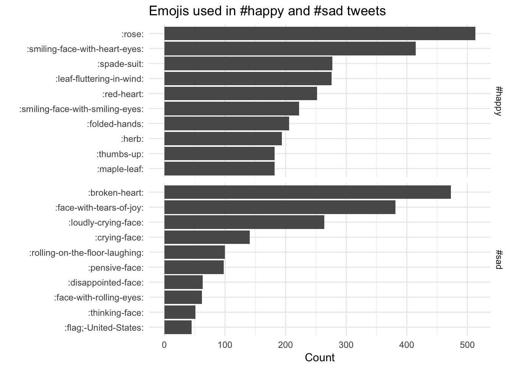

This code have been lightly revised to make sure it works as of 2018-12-16.
This post will be a short demonstration on how the the occurrence of emojis on twitter can be analysed using tidytools. We start of loading the necessary packages.
library(tidyverse)
## Warning: package 'tibble' was built under R version 3.6.2
library(tidytext)
library(rtweet)I have decided that for this example that I would focus on tweets that include the hash tags #happy and #sad in the hope that both would include a similar number of emojis but hopefully of different groups. We will use the rtweet package which already conforms to the tidy principles. Notice the retryonratelimit = TRUE argument as the combined number of tweets (10000 + 10000 = 20000) is larger the the 15 min limit of 18000.
tweets_happy <- search_tweets("#happy", n = 10000, include_rts = FALSE)
tweets_sad <- search_tweets("#sad", n = 10000, include_rts = FALSE,
retryonratelimit = TRUE)As a safety will we save these tweets.
write_as_csv(tweets_happy, "tweets_happy.csv")
write_as_csv(tweets_sad, "tweets_sad.csv")Now we load this data.frame that contains information regarding the various emojis.
emoji <- readr::read_csv("https://raw.githubusercontent.com/EmilHvitfeldt/Emoji-table/master/emoji.csv")Next we add the hash tag label as the emotion variable, next we tokenize all the tweets according to characters (this is done since a lot of the tweets didn’t use spaces emojis rendering them hard to detect.) and left join with the emoji data.frame such that we get the descriptions.
tweets_all <- bind_rows(
tweets_happy %>% mutate(emotion = "#happy"),
tweets_sad %>% mutate(emotion = "#sad")
)
emoji_all <- unnest_tokens(tweets_all, word, text,
token = "characters") %>%
select(word, emotion) %>%
left_join(emoji, by = c("word" = "utf")) %>%
filter(!is.na(shortname))Lastly we create a simple faceted bar chart of the number of emojis used within each hash tag.
emoji_all %>%
count(word, emotion, shortname) %>%
group_by(emotion) %>%
arrange(desc(n)) %>%
top_n(10, n) %>%
ungroup() %>%
mutate(emoji = reorder(shortname, n)) %>%
ggplot(aes(emoji, n)) +
geom_col() +
facet_grid(emotion ~ ., scales = "free_y") +
coord_flip() +
theme_minimal() +
labs(title = "Emojis used in #happy and #sad tweets",
y = "Count", x = "")
Using the emoji data.frame allows us to gain quick insight with the descriptive short names.
session information
─ Session info ───────────────────────────────────────────────────────────────
setting value
version R version 3.6.0 (2019-04-26)
os macOS Mojave 10.14.6
system x86_64, darwin15.6.0
ui X11
language (EN)
collate en_US.UTF-8
ctype en_US.UTF-8
tz America/Los_Angeles
date 2020-04-23
─ Packages ───────────────────────────────────────────────────────────────────
! package * version date lib source
P assertthat 0.2.1 2019-03-21 [?] CRAN (R 3.6.0)
P backports 1.1.6 2020-04-05 [?] CRAN (R 3.6.0)
P blogdown 0.18 2020-03-04 [?] CRAN (R 3.6.0)
P bookdown 0.18 2020-03-05 [?] CRAN (R 3.6.0)
P broom 0.5.5 2020-02-29 [?] CRAN (R 3.6.0)
P cellranger 1.1.0 2016-07-27 [?] CRAN (R 3.6.0)
P cli 2.0.2 2020-02-28 [?] CRAN (R 3.6.0)
P clipr 0.7.0 2019-07-23 [?] CRAN (R 3.6.0)
P colorspace 1.4-1 2019-03-18 [?] CRAN (R 3.6.0)
P crayon 1.3.4 2017-09-16 [?] CRAN (R 3.6.0)
P DBI 1.1.0 2019-12-15 [?] CRAN (R 3.6.0)
P dbplyr 1.4.2 2019-06-17 [?] CRAN (R 3.6.0)
P desc 1.2.0 2018-05-01 [?] CRAN (R 3.6.0)
P details * 0.2.1 2020-01-12 [?] CRAN (R 3.6.0)
P digest 0.6.25 2020-02-23 [?] CRAN (R 3.6.0)
P dplyr * 0.8.5 2020-03-07 [?] CRAN (R 3.6.0)
P ellipsis 0.3.0 2019-09-20 [?] CRAN (R 3.6.0)
P evaluate 0.14 2019-05-28 [?] CRAN (R 3.6.0)
P fansi 0.4.1 2020-01-08 [?] CRAN (R 3.6.0)
P forcats * 0.5.0 2020-03-01 [?] CRAN (R 3.6.0)
P fs 1.4.1 2020-04-04 [?] CRAN (R 3.6.0)
P generics 0.0.2 2018-11-29 [?] CRAN (R 3.6.0)
P ggplot2 * 3.3.0 2020-03-05 [?] CRAN (R 3.6.0)
P glue 1.4.0 2020-04-03 [?] CRAN (R 3.6.0)
P gtable 0.3.0 2019-03-25 [?] CRAN (R 3.6.0)
P haven 2.2.0 2019-11-08 [?] CRAN (R 3.6.0)
P hms 0.5.3 2020-01-08 [?] CRAN (R 3.6.0)
P htmltools 0.4.0 2019-10-04 [?] CRAN (R 3.6.0)
P httr 1.4.1 2019-08-05 [?] CRAN (R 3.6.0)
P janeaustenr 0.1.5 2017-06-10 [?] CRAN (R 3.6.0)
P jsonlite 1.6.1 2020-02-02 [?] CRAN (R 3.6.0)
P knitr * 1.28 2020-02-06 [?] CRAN (R 3.6.0)
P lattice 0.20-41 2020-04-02 [?] CRAN (R 3.6.0)
P lifecycle 0.2.0 2020-03-06 [?] CRAN (R 3.6.0)
P lubridate 1.7.8 2020-04-06 [?] CRAN (R 3.6.0)
P magrittr 1.5 2014-11-22 [?] CRAN (R 3.6.0)
P Matrix 1.2-18 2019-11-27 [?] CRAN (R 3.6.0)
P modelr 0.1.6 2020-02-22 [?] CRAN (R 3.6.0)
P munsell 0.5.0 2018-06-12 [?] CRAN (R 3.6.0)
P nlme 3.1-145 2020-03-04 [?] CRAN (R 3.6.0)
P pillar 1.4.3 2019-12-20 [?] CRAN (R 3.6.0)
P pkgconfig 2.0.3 2019-09-22 [?] CRAN (R 3.6.0)
P png 0.1-7 2013-12-03 [?] CRAN (R 3.6.0)
P purrr * 0.3.3 2019-10-18 [?] CRAN (R 3.6.0)
P R6 2.4.1 2019-11-12 [?] CRAN (R 3.6.0)
P Rcpp 1.0.4.6 2020-04-09 [?] CRAN (R 3.6.0)
P readr * 1.3.1 2018-12-21 [?] CRAN (R 3.6.0)
P readxl 1.3.1 2019-03-13 [?] CRAN (R 3.6.0)
renv 0.9.3 2020-02-10 [1] CRAN (R 3.6.0)
P reprex 0.3.0 2019-05-16 [?] CRAN (R 3.6.0)
P rlang 0.4.5 2020-03-01 [?] CRAN (R 3.6.0)
P rmarkdown 2.1 2020-01-20 [?] CRAN (R 3.6.0)
P rprojroot 1.3-2 2018-01-03 [?] CRAN (R 3.6.0)
P rstudioapi 0.11 2020-02-07 [?] CRAN (R 3.6.0)
P rtweet * 0.7.0 2020-01-08 [?] CRAN (R 3.6.0)
P rvest 0.3.5 2019-11-08 [?] CRAN (R 3.6.0)
P scales 1.1.0 2019-11-18 [?] CRAN (R 3.6.0)
P sessioninfo 1.1.1 2018-11-05 [?] CRAN (R 3.6.0)
P SnowballC 0.7.0 2020-04-01 [?] CRAN (R 3.6.2)
P stringi 1.4.6 2020-02-17 [?] CRAN (R 3.6.0)
P stringr * 1.4.0 2019-02-10 [?] CRAN (R 3.6.0)
P tibble * 3.0.1 2020-04-20 [?] CRAN (R 3.6.2)
P tidyr * 1.0.2 2020-01-24 [?] CRAN (R 3.6.0)
P tidyselect 1.0.0 2020-01-27 [?] CRAN (R 3.6.0)
P tidytext * 0.2.3 2020-03-04 [?] CRAN (R 3.6.0)
P tidyverse * 1.3.0 2019-11-21 [?] CRAN (R 3.6.0)
P tokenizers 0.2.1 2018-03-29 [?] CRAN (R 3.6.0)
P vctrs 0.2.4 2020-03-10 [?] CRAN (R 3.6.0)
P withr 2.1.2 2018-03-15 [?] CRAN (R 3.6.0)
P xfun 0.13 2020-04-13 [?] CRAN (R 3.6.2)
P xml2 1.3.0 2020-04-01 [?] CRAN (R 3.6.2)
P yaml 2.2.1 2020-02-01 [?] CRAN (R 3.6.0)
[1] /Users/emilhvitfeldthansen/Desktop/blogv4/renv/library/R-3.6/x86_64-apple-darwin15.6.0
[2] /private/var/folders/m0/zmxymdmd7ps0q_tbhx0d_26w0000gn/T/RtmpBqQypg/renv-system-library
P ── Loaded and on-disk path mismatch.